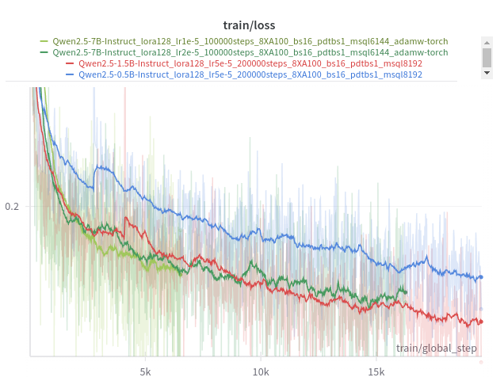
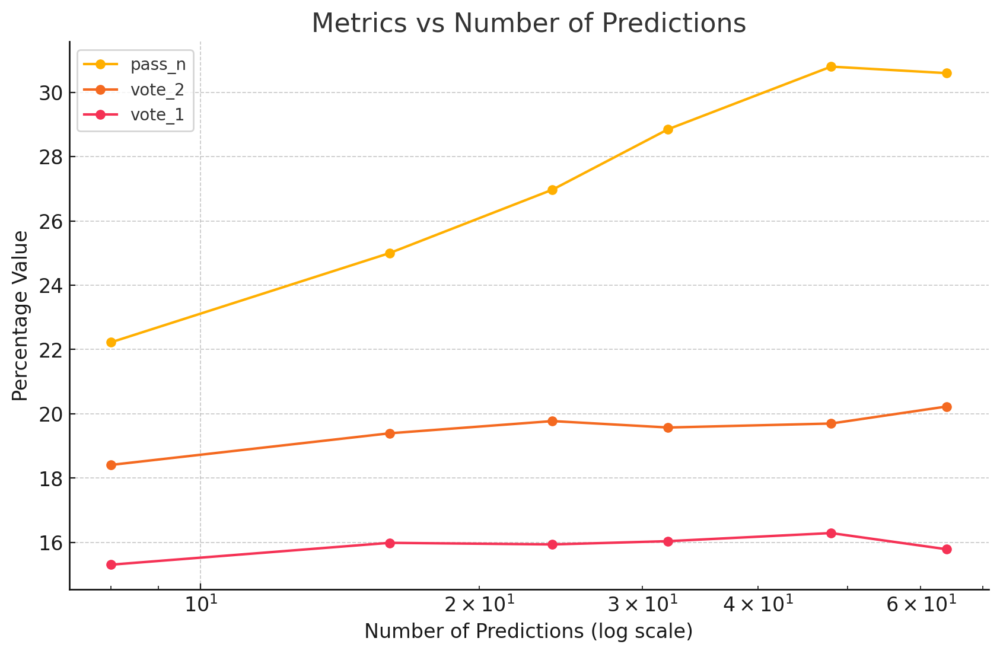

Iteration 50. Last trainings
06-11-2024
Goal
Can we improve the LB score by training the last models on a powerful server?
Motivation
There is not enough time to train models on Veridas cluster, I need to use a 8xA100 server to train the models fast enough for the end of the challenge.
Development
Steps to train the model
- Add the public SSH key of the machine to Github.
cat ~/.ssh/id_rsa.pub - Clone the arc 24 repo to the machine:
cd ~/code; git clone git@github.com:ironbar/arc24.git - Create a python environment for training
cd ~/code/arc24
python3 -m virtualenv ~/envs/arc24
source ~/envs/arc24/bin/activate
pip install -r requirements.txt
pip install flash-attn --no-build-isolation
- Do some first trainings to see if the training speed is enough
source ~/envs/arc24/bin/activate
export gpus=8
export batch_size=16
export steps=200
export per_device_train_batch_size=1
export model_path=Qwen/Qwen2.5-0.5B-Instruct
export WANDB_API_KEY=
accelerate launch --num_processes ${gpus} --num_machines 1 --mixed_precision bf16 --multi_gpu \
/root/code/arc24/scripts/fine-tuning.py \
--n_gpus ${gpus} \
--batch_size ${batch_size} \
--per_device_train_batch_size ${per_device_train_batch_size} \
--output_dir /root/models/20241106_debug_training_speed/${gpus}XA100_bs${batch_size}_pdtbs${per_device_train_batch_size}_${steps}steps_$(basename $model_path) \
--max_steps ${steps} \
--model_path ${model_path} \
--lora_r 128 \
--device_map None \
--no-verbose \
--max_seq_len 8192 \
--learning_rate 5e-5 \
--train_datasets /root/code/arc24/data/original_data/arc-agi_training_challenges.json output-from-examples-v1 \
--val_dataset /root/code/arc24/data/original_data/arc-agi_evaluation_challenges.json output-from-examples-v1 \
--remove_train_samples_to_fit_max_seq_len \
--save_steps 500 \
--eval_steps 5000000 \
--warmup_ratio 1e-1
- Copy extra data
export machine_ip=94.156.8.181
export machine_ip=94.156.8.119
export machine_ip=94.156.8.239
scp -P 50022 /mnt/hdd0/Kaggle/arc24/data/verifier/evaluation_v0.json root@${machine_ip}:~/code/arc24/data/verifier
scp -P 50022 /mnt/hdd0/Kaggle/arc24/data/verifier/training_v1.json root@${machine_ip}:~/code/arc24/data/verifier
scp -P 50022 /mnt/hdd0/Kaggle/arc24/data/rearc/v2/re-arc.json root@${machine_ip}:~/code/arc24/data/external_data
- Download barc datasets
mkdir /root/code/arc24/data/barc
cd /root/code/arc24/data/barc
wget https://huggingface.co/datasets/barc0/100k-gpt4-description-gpt4omini-code_generated_problems/resolve/main/100k-gpt4-description-gpt4omini-code_generated_problems.jsonl?download=true -O 100k-gpt4-description-gpt4omini-code_generated_problems.jsonl
wget https://huggingface.co/datasets/barc0/100k-gpt4omini-description-gpt4omini-code_generated_problems/resolve/main/100k_gpt4o-mini_generated_problems.jsonl?download=true -O 100k_gpt4o-mini_generated_problems.jsonl
wget https://huggingface.co/datasets/barc0/200k_HEAVY_gpt4o-description-gpt4omini-code_generated_problems/resolve/main/data_100k.jsonl?download=true -O data_100k.jsonl
wget https://huggingface.co/datasets/barc0/200k_HEAVY_gpt4o-description-gpt4omini-code_generated_problems/resolve/main/data_suggestfunction_100k.jsonl?download=true -O data_suggestfunction_100k.jsonl
- Install packages:
apt install screen nvtop htop rsync - Run the final training:
export model_path=Qwen/Qwen2.5-1.5B-Instruct
export learning_rate=5e-5
export lora_r=128
export gpus=8
export batch_size=16
export steps=200000
export per_device_train_batch_size=1
export max_seq_len=8192
export WANDB_API_KEY=
accelerate launch --num_processes ${gpus} --num_machines 1 --mixed_precision bf16 --multi_gpu \
/root/code/arc24/scripts/fine-tuning.py \
--n_gpus ${gpus} \
--batch_size ${batch_size} \
--per_device_train_batch_size ${per_device_train_batch_size} \
--output_dir /root/models/20241106_final_training/$(basename $model_path)_lora${lora_r}_lr${learning_rate}_${steps}steps_${gpus}XA100_bs${batch_size}_pdtbs${per_device_train_batch_size}_msql${max_seq_len} \
--max_steps ${steps} \
--model_path ${model_path} \
--lora_r ${lora_r} \
--device_map None \
--no-verbose \
--max_seq_len ${max_seq_len} \
--learning_rate ${learning_rate} \
--train_datasets barc-200-20-/root/code/arc24/data/barc/100k-gpt4-description-gpt4omini-code_generated_problems.jsonl output-from-examples-v1 \
--train_datasets barc-200-20-/root/code/arc24/data/barc/100k_gpt4o-mini_generated_problems.jsonl output-from-examples-v1 \
--train_datasets barc-200-20-/root/code/arc24/data/barc/data_100k.jsonl output-from-examples-v1 \
--train_datasets barc-200-20-/root/code/arc24/data/barc/data_suggestfunction_100k.jsonl output-from-examples-v1 \
--train_datasets /root/code/arc24/data/verifier/training_v1.json select-output-from-examples-v0 \
--train_datasets /root/code/arc24/data/verifier/training_v1.json verify-output-from-examples-v0 \
--train_datasets /root/code/arc24/data/verifier/evaluation_v0.json select-output-from-examples-v0 \
--train_datasets /root/code/arc24/data/verifier/evaluation_v0.json verify-output-from-examples-v0 \
--train_datasets /root/code/arc24/data/original_data/arc-agi_training_challenges.json output-from-examples-v1 \
--train_datasets /root/code/arc24/data/original_data/arc-agi_evaluation_challenges.json output-from-examples-v1 \
--train_datasets /root/code/arc24/data/external_data/re-arc.json output-from-examples-v1 \
--train_datasets /root/code/arc24/data/external_data/kaggle.json output-from-examples-v1 \
--train_datasets /root/code/arc24/data/external_data/pqa-dataset-1k.json output-from-examples-v1 \
--train_datasets /root/code/arc24/data/external_data/neoeye_tama.json output-from-examples-v1 \
--train_datasets /root/code/arc24/data/external_data/MINI-ARC.json output-from-examples-v1 \
--train_datasets /root/code/arc24/data/original_data/arc-agi_training_challenges.json input-from-inputs-v0 \
--train_datasets /root/code/arc24/data/original_data/arc-agi_evaluation_challenges.json input-from-inputs-v0 \
--train_datasets /root/code/arc24/data/external_data/re-arc.json input-from-inputs-v0 \
--train_datasets /root/code/arc24/data/external_data/kaggle.json input-from-inputs-v0 \
--train_datasets /root/code/arc24/data/external_data/pqa-dataset-1k.json input-from-inputs-v0 \
--train_datasets /root/code/arc24/data/external_data/neoeye_tama.json input-from-inputs-v0 \
--train_datasets /root/code/arc24/data/external_data/MINI-ARC.json input-from-inputs-v0 \
--val_dataset /root/code/arc24/data/original_data/arc-agi_evaluation_challenges.json output-from-examples-v1 \
--remove_train_samples_to_fit_max_seq_len \
--optim adamw_torch \
--save_steps 500 \
--eval_steps 5000000 \
--warmup_ratio 2e-2
Syncronize checkpoints
while true; do
for machine_ip in 94.156.8.181 94.156.8.119; do
rsync -r -avP -e "ssh -i ~/.ssh/id_rsa.pub -p 50022" root@${machine_ip}:~/models/20241106_final_training/ /mnt/hdd0/Kaggle/arc24/models/20241106_final_training/
done
for machine_ip in 192.222.52.72; do
rsync -r -avP -e "ssh -i ~/.ssh/id_rsa.pub" ubuntu@${machine_ip}:~/models/20241106_final_training/ /mnt/hdd0/Kaggle/arc24/models/20241106_final_training/
done
sleep 1h
done
while true; do
for machine_ip in 94.156.8.181 94.156.8.119 94.156.8.239; do
rsync -r -avP -e "ssh -i ~/.ssh/id_rsa.pub -p 50022" root@${machine_ip}:~/models/20241106_final_training/ /mnt/hdd0/Kaggle/arc24/models/20241106_final_training/
done
sleep 1h
done
Train bigger models
It might be worth to train bigger models. I already studied the improvements of using bigger models on iteration 20. Also on iteration 46 I have seen that using smaller models produced worse results even when training the models for longer.
Now that I have a model that can select predictions, it might be worth to use bigger models even when I cannot do test-time fine-tuning on them.
FP8 training on H100
- https://huggingface.co/docs/accelerate/en/usage_guides/low_precision_training
- https://github.com/NVIDIA/TransformerEngine
pip install git+https://github.com/NVIDIA/TransformerEngine.git@stable
I have not been able to install the backends required for fp8 training.
Plan the final 12 submissions
I'm not sure if I will have a Qwen2.5-7B model, it depends on the availability of a 3rd training machine by compute strong and being able to train the model successfully.
I have to answer the following questions:
- How good are the new models at selecting predictions? (and how fast also) Answering this question will allow to better choose the combination methods for the predictions.
- Do the new models improve the LB score when using the classic test-time fine-tuning submission?
- Is it worth to make predictions with the model without test-time fine-tuning? That would be fast and might solve some additional tasks (8 minutes to do 16 predictions per task using Qwen2.5-0.5B).
- Could I do test-time fine-tuning with the 1.5B model? I could test this in the Kaggle notebook without submission.
There are 3 sources of predictions:
- Test-time fine-tuned model
- Frozen model
- 2020 solution
And there are 4 ways of combining the predictions:
- Selection using a model
- Voting
- Combination of predictions (first attempt from one submission and the second from other submission)
- Concatenation
The submissions that I can create are the combination of this two variables.
Thursday 7 November
I'm going to have available Qwen2.5-0.5B trained for 200k steps. I have made a classic submission that scored 35 and two triple ensemble submission that scored 35 and 33.
Friday 8
I'm going to have available Qwen2.5-0.5B trained for 400k steps and Qwen2.5-1.5B trained for 200k steps.
- Submission with Qwen2.5-0.5B and learning rate 4e-5: 38
- Submission with Qwen2.5-1.5B and learning rate 1e-5: 35 (but I had an error on
max_seq_len, so score might be higher. Also I had a timeout on another submission with Qwen2.5-1.5B)
Saturday 9
I have available a Qwen2.5-0.5B trained for 400k steps, Qwen2.5-1.5B trained for 300k steps and Qwen2.5-7B trained for 100k steps.
- Submission with Qwen2.5-1.5B and learning rate 1e-5: 34
- Submission with Qwen2.5-1.5B and learning rate 2e-5: 38
- Submission with Qwen2.5-1.5B and learning rate 4e-5: 38
Sunday 10
13:00 is the last time to submit a system that takes 12 hours to create the submission
- Submission with Qwen2.5-0.5B and learning rate 8e-5: 35
- Triple ensemble with Qwen2.5-7B: 37 and 33
Test-time fine-tuning with Qwen2.5-1.5B
On this notebook I have verified that I can do test-time fine-tuning with Qwen2.5-1.5B.
I had to decrease the max_seq_len from 5120 to 3584 to avoid OOM errors.
- Fine-tuning took 2.6 minutes per task for 100 steps
- Inference took 1.2 minutes per task to do 32 predictions
Under that conditions a submission would take around 6 hours. It seems we have margin to increase either the training steps or the number of predictions.
Experiment with bigger steps and predictions:
- 64 predictions -> 1.5 minutes per tasks
- 200 steps -> 4.3 minutes per task
Which learning rate to use? I can't use the evaluation set to tune the learning rate. However I can have a look at the Qwen2.5-0.5B models. We trained the models with learning rate between 5e-5 and 1e-4. And the test-time fine-tuning learning rates were 4e-5 and 8e-5 most frequently. Thus we can see that we used almost the exact same learning rate despite using a batch size of 1 for test-time fine-tuning.
The Qwen2.5-1.5B was trained with a learning rate of 5e-5. A conservative learning rate for test-time fine-tuning would be 1e-5. If it works we could try increasing it to 2e-5.
Test-time fine-tuning with Qwen2.5-7B
Let's see if we can use test-time fine-tuning with Qwen2.5-7B.
If I decrease the max_seq_len to 896 I can fine-tune on Kaggle machines, at a speed of around 2.45 seconds per sample.
In those conditions I could only use around 50% of the tasks for training.
If I use 4 bit quantization the speed slows down to around 11.5 seconds per sample. Then I have tried disabling gradient checkpointing and the speed increases to 7 seconds per sample. Is better but still very slow.
My idea is to create a notebook for the 7B model, that only does test-time fine-tuning on the 50% smallest tasks and does inference with the frozen model for the grouped other 50% tasks. I'm not sure if this might work better than the smaller models but it is worth to try it.
I have found that inference is extremely slow because I have to merge the heavy model with the lora adapter before using VLLM. I have tried modifying the inference script to support using LoRAs directly but VLLM does not support dora, and I have used it for training. This would imply that half of the submission time would go to inference (because it's taking 4 minutes to make 8 predictions per task)
Thus I don't believe it is worth to use Qwen2.5-7B for test-time fine-tuning. I could use it in an ensemble without fine-tuning.
Results
Training speed
I have done some initial training speed experiments to verify that the machines work well. I haven't seen any speed improvement by increasing the batch size or increasing the per device train batch size.
| model | hardware | it/s |
|---|---|---|
| Qwen2.5-0.5B-Instruct | 8xA100 | 2.38 |
| Qwen2.5-1.5B-Instruct | 8xA100 | 1.44 |
| Qwen2.5-7B-Instruct | 8xA100 | 0.68 |
| Qwen2.5-7B-Instruct | 8xH100 | 1.09 |
The H100 might be a good idea for Qwen2.5-7B-Instruct.
Qwen2.5-7B-Instruct is not showing better results than Qwen2.5-1.5B-Instruct

We show a great improvement of Qwen2.5-1.5B-Instruct over Qwen2.5-0.5B-Instruct on training loss.
However we don't observe the same improvement with Qwen2.5-7B-Instruct. I have tried with 3 different
learning rates: 1e-5, 2e-5, 5e-5 (diverged)
| model parameters | LoRA parameters for rank 128 |
|---|---|
| 0.5B | 17M |
| 1.5B | 35M |
| 7B | 80M |
We can see that the trainable number of parameters is different, but can it explain the different training dynamics?
Effect of the number of predictions
I'm reusing data from iteration 30 to create the plot below.

The plot shows that the pass_n metric increases linearly with the logarithmic of the number of predictions.
However voting improves with a much lower slope. This is likely due to the fact that the solutions that are
found when using a higher number of predictions do not reach the needed majority of the votes.
¿Maybe a selection model could scale better? So far I have only used the selection model for 32 predictions.
Frozen model results
| models | LB score |
|---|---|
| Qwen2.5-0.5B-Instruct | 13 |
| Qwen2.5-1.5B-Instruct | 11 |
| Qwen2.5-7B-Instruct | 13 |
The bigger models do not show better results on LB when making a submission with the frozen model. This submissions were done after the competition end.
Conclusion
We have not been able to improve the LB score by training new models. Maybe we should have trained them for longer since we were training for more tasks.
Next steps
TODO
- How to sync checkpoints between the servers and my machine?
- Verify that I can use the bigger models in Kaggle
- Upload base models
- Upload loras from early checkpoints
- Notebook to do inference without test-time fine-tuning (I believe it already exists)
- train Qwen2.5-7B-Instruct with lora_r=64
- Plan the last 12 submissions
- Voting and selection dynamics could be different after test-time fine-tuning
- Could I do test-time fine-tuning with the 1.5B model?
- Create a notebook for triple ensemble
- Add submission results from the models without ttft
- Conclusion